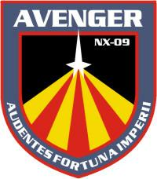

Astronavi |
| ISS Avenger NX-09 Astronave di classe NX dell'Impero Terrestre.. | In a Mirror, Darkly - Part II |
| USS Defiant NX-74205 Replica dell'omonina nave della Flotta Stellare realizzata utilizzando i progetti che O'Brien dello Specchio ha rubato quando è stato su Deep Space Nine nel 2371 (Through the Looking Glass). Viene messa a punto su Terok Nor con l'aiuto di Sisko nel 2372 (Shattered Mirror) e si rivela fondamentale nella lotta contro l'Alleanza Klingon-Cardassiana. Questa nave non è dotata di un dispositivo di occultamento. | Through the Looking Glass, Shattered Mirror |
| ISS Enterprise NX-01 Nave di classe NX dell'Impero Terrestre, comandata dal capitano Forrest e dal capitano Archer. Distrutta dai Tholiani nel 2155. | In A Mirror, Darkly - Part I |
| ISS Enterprise NCC-1701 Nave di classe Constitution dell'Impero Terrestre, comandata nel 2267 dal capitano J.T. Kirk dello Specchio in seguito all'assassinio del precedente capitano Christopher Pike dello Specchio. Tra le missioni della nave si annoverano la neutralizzazione dell'insurrezione dei Gorlan con la distruzione del loro mondo natale e l'esecuzione capitale di cinquemila coloni su Vega IX. | Mirror, Mirror |
| Regency One Gigantesca nave dell'Alleanza Klingon-Cardassiana apparentemente simile alle navi di classe Negh'Var, ma considerevolmente più grande. È la nave del Reggente Worf almeno dal 2372. | Shattered Mirror, The Emperor's New Cloak |
| [Senza Nome] Nave dell'Alleanza Klingon-Cardassiana simile al Bird of Prey. | |
| [Senza Nome] Nave dell'Alleanza Klingon-Cardassiana simile alla navi di classe Vor'cha. | Crossover |
| [Senza Nome] Vascello di Assalto della Resistenza Terrestre molto simile ai vascelli bajoriani del nostro universo. Ha un equipaggiamento di difesa limitato. | Through the Looking Glass |
| [Senza Nome] Nave dell'Alleanza Klingon-Cardassiana simile alle navi di classe Galor. | Through the Looking Glass, Shattered Mirror |
| 2 [Senza Nome] Navi della Resistenza Terrestre simili a quelle di classe Peregrine. Una di queste navi è pilotata da Bashir dello Specchio nel 2372. | Shattered Mirror |